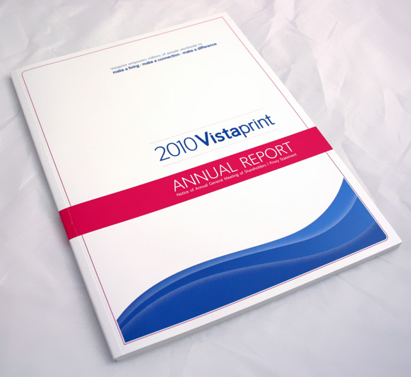
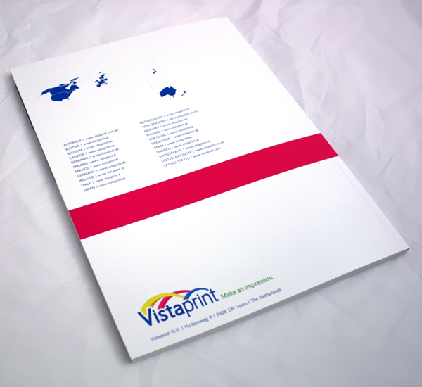
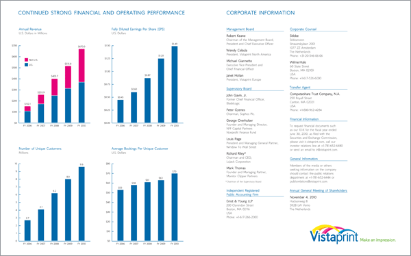

vistaprint annual report
The goal with the 2010 Vistaprint Annual Report was to design something simpler and more understated than past years. After successfully navigating an economic recession we decided that a more frugal approach would appropriately reflect to investors our effort to put our focus back on business basics for the fiscal year.
We kept existing brand elements such as our font, colors and the 'wave' introduced with our rebranding from the year before, but kept it down to two colors, plus some very light gray and lots of white space.
A consistent element from past reports was the world map used to indicate our status as a global company. My feeling was that it really wasn't serving any meaningful purpose, so I chose to highlight only the countries in which we operate. There was some feedback that this made us look like a small company, but the CEO agreed with my assessment that it looked more like we were highlighting our potential for expansion and growth.
Finally, I simplified the charts highlighting our key financial metrics. In past years there were 3-dimensional effects applied to the bars and depth effects applied to the graph background. I chose to remove these in order to clarify the data itself.
This project only included the inside and outside covers of the report. The inside pages were put together and structured by the finance team. You can view a high-quality PDF of my covers by clicking here to open in a new window/tab.